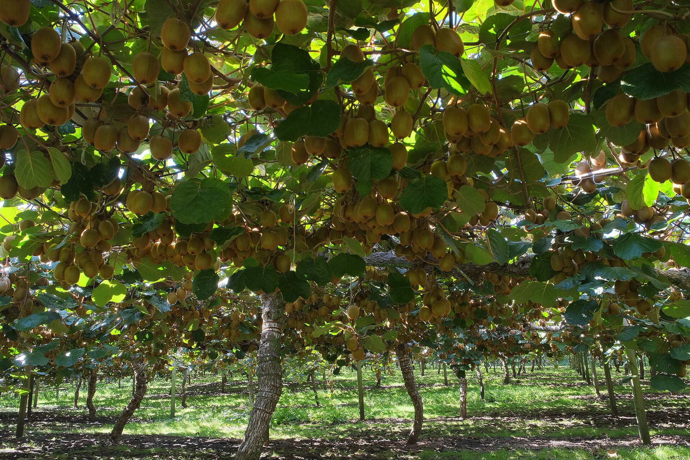
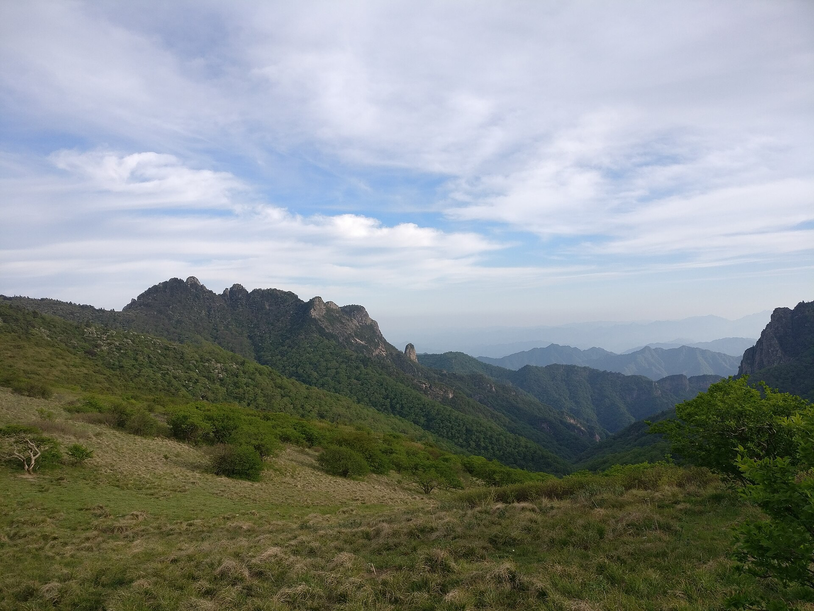
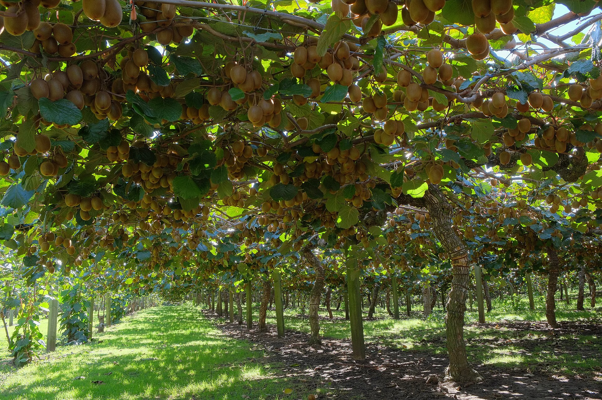
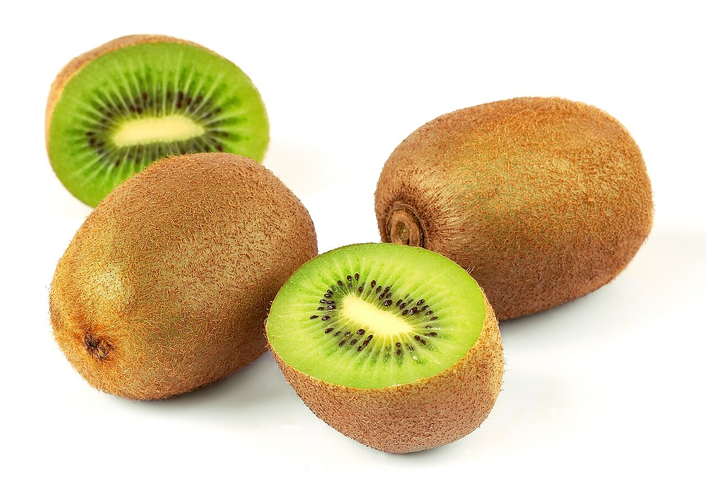

秦岭屏障
北来的冷空气被山体拦在外面，园子里留得住温润，也留得住一整季的生长期。

山 与 水
周至，古称盩厔——「山曲曰盩，水曲曰厔」。说的是这里山势盘旋、水流回环。
县城往南就是秦岭主脊，往北是渭水。黑河从秦岭深处发源，穿过县境一路向北， 是西安重要的水源地。山在前，水在侧，果园就铺在两者之间的山前平原与台塬上。
这里是猕猴桃的原产地之一，也是它最舒服的优生区之一。 山体替果园挡下北来的冷空气，河水替它把土层洗得疏松干净， 再加上一份恰到好处的昼夜温差——果子长得慢，甜得实。
中国猕猴桃之乡，猕猴桃的原产地和最佳优生区之一。


一 方 风 土
北来的冷空气被山体拦在外面，园子里留得住温润，也留得住一整季的生长期。
秦岭雪融水自流灌溉，水质清冽，土不返盐，根系一年到头是松快的。
白天光合攒糖，夜里低温封存。糖分不往外跑，果心才够甜够实。
土层深厚、疏松透气，根扎得下去，果形才端正，皮色才匀净。
全县 97 个猕猴桃「一村一品」专业村 优果率突破 90% 全国唯一的猕猴桃产业标准化管理示范县
五 个 品 种
点击左侧品种，看看它的秋分时节、甜度和性子。
CUI XIANG
周至自主培育 · 绿心 · 早熟
果肉翠绿，切开是清亮的一汪绿。入口是浓甜，尾调带一点清冽的花香， 不腻、不闷，放软了尤其好。九月中下旬就能开园，是每年第一口秋天。
一 颗 果 的 剖 面
拖动让它转一圈，再点一下——就切开了。
当前浏览器没有开启 WebGL，这里本该是颗能转的猕猴桃。
一层褐色的细绒毛，替它挡住北来的风和冬天的干。
从翠绿到金黄。糖分就存在这里，可溶性固形物 18—20°。
一圈白色的果心，是所有甜味的起点。
一颗果里几百粒黑籽，细得像芝麻，围着果心排成一圈。
节 气 时 序
五个月的等待，全部留给九月的这一口。
剪去老枝，绑蔓上架。园子里开始有动静了。
一朵花只开一天。蜜蜂进园，替我们完成最要紧的那件事。
一根枝上只留几枚，剩下的都摘掉——舍不得，也得舍。
果子在袋里慢慢膨大，阳光在叶隙之间走。
翠香先熟。糖度化验过关，才准开园。
徐香、秦美陆续下树，冷链车直接进园。
0℃ 恒温库里休眠。淀粉转成糖，急不得。
好 果 可 验
标准化种植与品控体系下，好果是常态而不是运气。
采下来先进冷库，把九月的鲜度留到冬天。
果汁、果干、果酒——把一颗果吃干榨净。
连续十年，中国果品区域公用品牌价值榜浆果类第一。
一颗果的旅程
周至首创猕猴桃即食技术：出库前完成软化处理，不用再等三五天，拆箱即食。
产地标识、溯源系统、砧木技术层层建档，扫一下就知道它长在哪块地。
寻 味

对半切开，勺子贴着皮转一圈。什么都不用加。
冷藏两小时，切薄片，撒一撮海盐——甜会更突出。
压成泥拌无糖酸奶，撒一把燕麦，就是一顿早餐。
整颗冷冻，半解冻时用勺子刮着吃，比冰淇淋清爽。
绒毛完整、果形饱满、捏着两头微微发软，就是刚好。
硬的话，和一只苹果或香蕉装进袋子，两天就软。
软了放冷藏，三天内吃完；没软别放冰箱，会僵。
认准「周至猕猴桃」区域公用品牌标识。